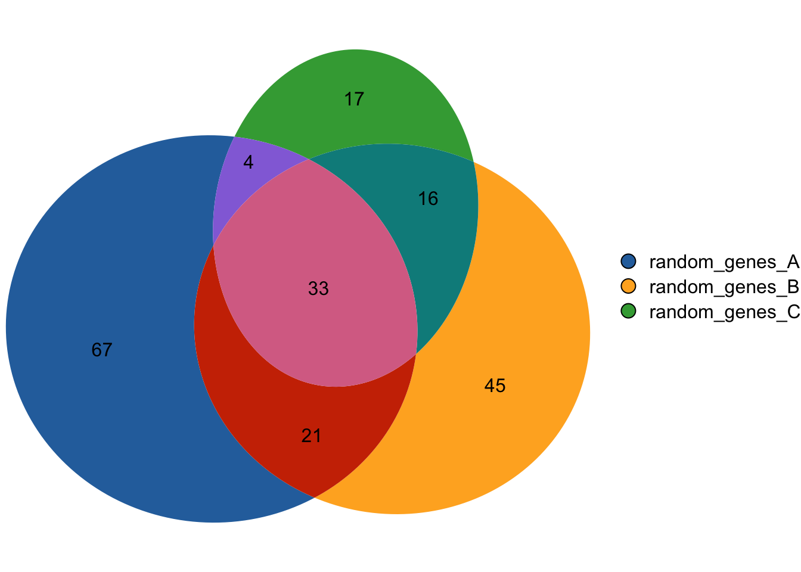
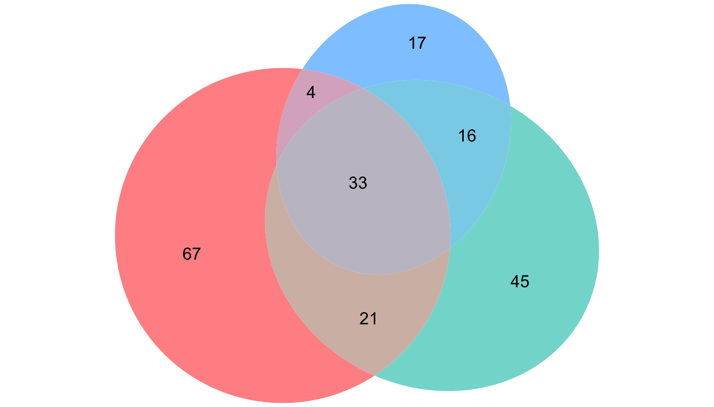
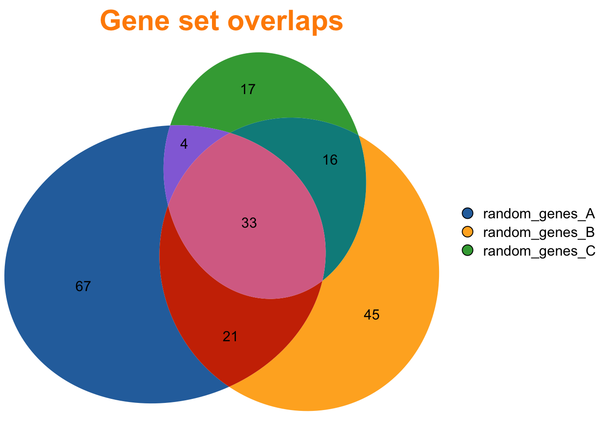
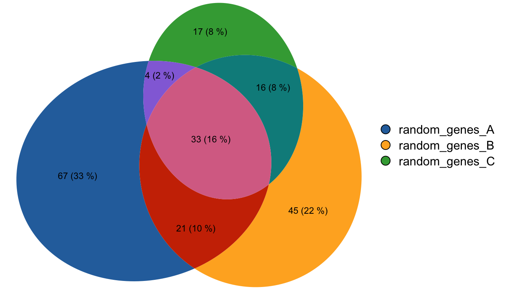
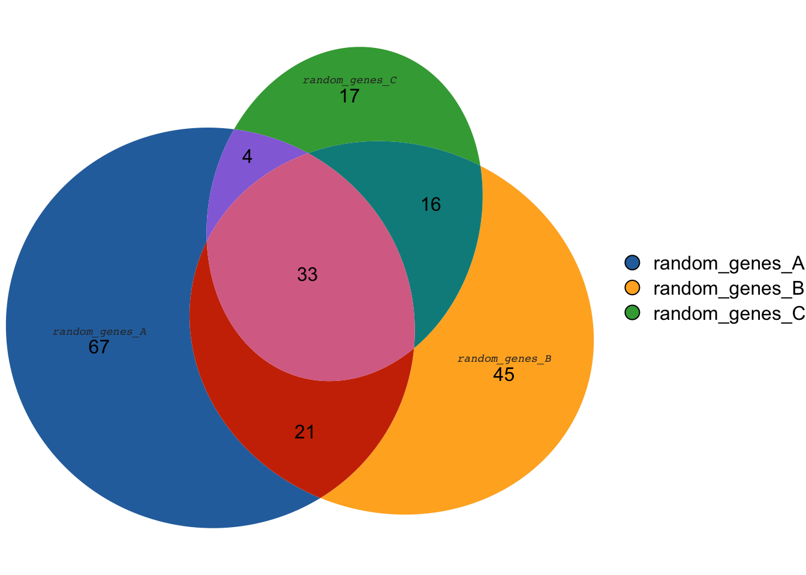
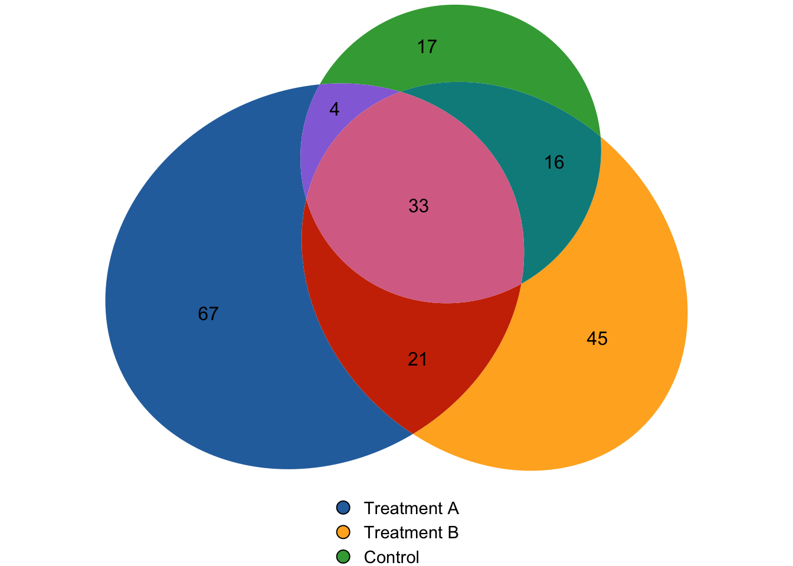
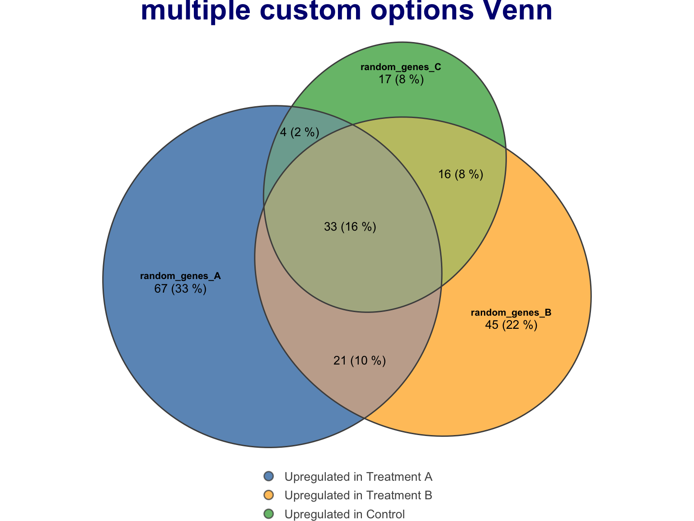
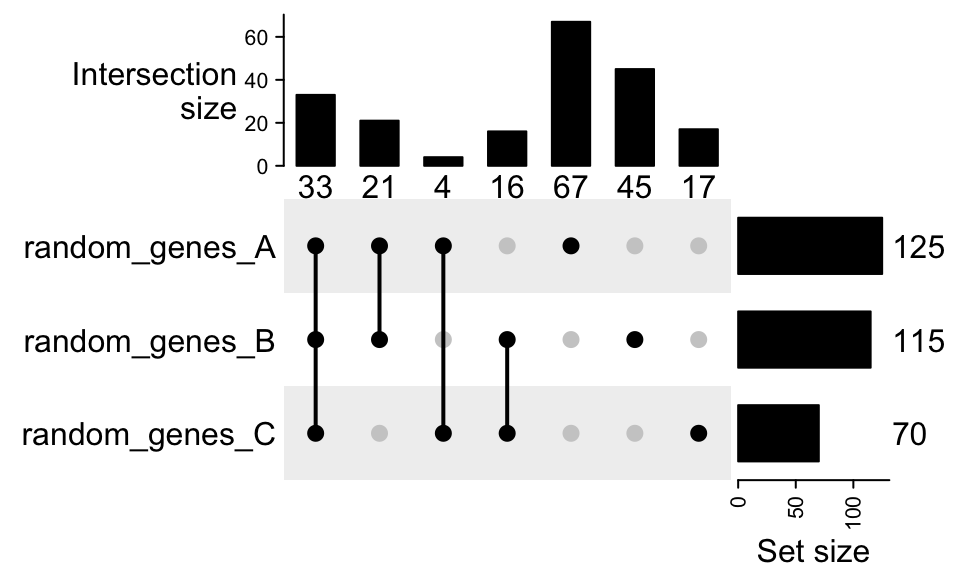

About
The gVenn allows you to create Venn diagrams with
proportional areas. Initially created to work with genomic intervals, it
also works perfectly for visualizing overlaps between between gene lists
and other character vectors.
Check out the full package
documentation for more details. gVenn is a project by
Christophe Tav.

Libraries
You can install gVenn from Bioconductor:
# Install from Bioconductor
if (!require("BiocManager", quietly = TRUE))
install.packages("BiocManager")
BiocManager::install("gVenn")Then load the library:
That’s all you need!
Dataset
We’ll use the built-in gene_list dataset that comes with
the package. It contains three sets of gene names:
## List of 3
## $ random_genes_A: chr [1:125] "ALPP" "ACTG1P9" "AHSG" "ASIC2" ...
## $ random_genes_B: chr [1:115] "AFM" "ADPRH" "AIF1" "ACVR2A" ...
## $ random_genes_C: chr [1:70] "ACTN1" "ALDOA" "CRYBG1" "AK4" ...This is a simple named list containing three character vectors. Each
vector represents a set of genes. This is the typical format you’ll use
with gVenn!
You can see we have:
- 125 genes in list A
- 115 genes in list B
- 70 genes in list C
Let’s visualize the overlaps to find shared and unique genes!
Two steps to an area-proportional Venn diagram
Creating a Venn diagram with gVenn is incredibly
simple:
- First, compute the overlaps using
computeOverlaps() - Then, visualize with
plotVenn()
The magic of gVenn is that the areas are
proportional to the actual overlap sizes. In traditional Venn
diagrams, circles often have fixed sizes, but here the areas are
adjusted to size each region to reflect the true numbers!
# 1. Compute overlaps
overlap <- computeOverlaps(gene_list)
# 2. Create the Venn diagram
plotVenn(overlap)
Understanding your results
From the Venn diagram above, we can see:
- 67 genes are unique to list A (only in A)
- 45 genes are unique to list B (only in B)
- 17 genes are unique to list C (only in C)
- 21 genes are shared between A and B (but not C)
- 4 genes are shared between A and C (but not B)
- 16 genes are shared between B and C (but not A)
- 33 genes are common to all three lists (A ∩ B ∩ C)
The diagram makes it easy to see these patterns at a glance!
Custom colors
Let’s make the diagram prettier by customizing the fill colors. The
fills parameter accepts:
- A character vector of colors
- A list with
fill(colors) andalpha(transparency, 0-1)
You can use any valid R color: hex codes ("#FF6B6B"),
named colors ("steelblue"), or RGB values.
The alpha parameter controls transparency - values
closer to 0 are more transparent, while 1 is fully opaque.

Adding a title
Add a title to your Venn diagram using the main
parameter:
plotVenn(overlap,
main = list(label = "Gene set overlaps",
fontsize = 16,
font = 2,
col = "darkorange")) # font=2 means bold
The main parameter can be:
- A simple character string:
main = "My Title" - A list with
label,fontsize,font, andcolfor full control
Show counts and percentages
By default, the diagram shows counts. You can also display
percentages or both using the
quantities parameter.
This is particularly useful for presentations where you want to communicate proportions clearly.
The type option accepts:
"counts": raw numbers (default)"percent": percentagesc("counts", "percent"): both!

Style with colored borders
For a different look, try using transparent fills with colorful borders:
plotVenn(overlap,
fills = "transparent",
edges = list(col = c("#E74C3C", "#3498DB", "#2ECC71"),
lwd = 4,
lty = 2),
main = list(label = "bordered style",
fontsize = 14))
The edges parameter controls the borders:
col: border colorslwd: line width (thickness)lty: line type (1=solid, 2=dashed, etc.)
Show set labels
By default, labels are hidden. Enable them with
labels = TRUE or customize their appearance with a
list.
The labels show the names of your input lists (in this case: “random_genes_A”, “random_genes_B”, “random_genes_C”).
You can control:
col: colorfontsize: font sizefont: font style (1=plain, 2=bold, 3=italic, 4=bold italic)fontfamily: font family

Customize legend
By default, a legend appears on the right side. You can customize its position or hide it:
plotVenn(overlap,
legend = list(side = "bottom",
labels = c("Treatment A", "Treatment B", "Control"),
fontsize = 11))
The legend parameter accepts:
FALSE- hide the legend- A character string:
"right","left","top","bottom"for position - A list with
side,labels,fontsizefor full customization
Combining multiple custom options
Here’s a complete example with all customizations for a publication-ready figure:
plotVenn(overlap,
# Custom colors with transparency
fills = list(fill = c("#2B70AB", "#FFB027", "#3EA742"),
alpha = 0.75),
# Subtle borders
edges = list(col = "gray30", lwd = 1.5),
# Bold labels
labels = list(col = "black", fontsize = 8, font = 2),
# Show counts
quantities = list(type = c("counts", "percent"),
col = "black",
fontsize = 10),
# Title
main = list(label = "multiple custom options Venn",
col = "navy",
fontsize = 16,
font = 2),
# Custom legend
legend = list(side = "bottom",
labels = c("Upregulated in Treatment A",
"Upregulated in Treatment B",
"Upregulated in Control"),
fontsize = 10))
This demonstrates how flexible gVenn is - you can
customize every aspect to match your needs!
Going further
For more complex visualizations with 4 or more sets,
consider using UpSet plots instead of Venn diagrams. The
gVenn package also provides plotUpSet() for
this purpose.

Check out the full gVenn documentation to learn how to:
- Work with genomic regions (GRanges)
- Create UpSet plots for complex overlaps
- Apply advanced customization
- Save your visualizations
- Extract and analyze intersection sets
- See additional examples and use cases